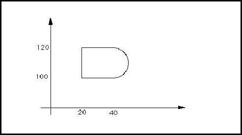

constantNameRef ::= nameRef
!booleanConstantRef !integerConstantRef !stringConstantRef
ConstantNameRef is an identifier used to refer to a booleanConstant, integerConstant or stringConstant.
(condition (booleanConstantRef fastCircuit))
Here, the constantNameRef is fastCircuit.
constantValues ::= '(' 'constantValues'
{ booleanConstant | integerConstant | stringConstant }
')'
The constantValues construct is used to specify all constant definitions within the edifHeader.
(edifHeader (edifLevel 0)
(keywordMap (k0KeywordLevel))
(unitDefinitions ...)
(fontDefinitions ...)
(physicalDefaults ...)
(constantValues
(booleanConstant fastCircuit (true))
(integerConstant fullWordLength 32) ...)
...)
Here, the edifHeader contains two constant definitions.
contract ::= '(' 'contract'
stringToken
')'
Contract identifies the contract associated with the drawing. Contract means all types of agreements and orders for the procurement of supplies or services.
(contract "91/1010")
contractDisplay ::= '(' 'contractDisplay'
( addDisplay | replaceDisplay | removeDisplay )
')'
<pageTitleBlockAttributeDisplay
ContractDisplay is used to define display positions for contract. When used in the context of pageTitleBlock, it may add, replace or remove displays. Within the context of a template definition, only addDisplay may be used.
copyright ::= '(' 'copyright'
year
{ stringToken }
')'
copyrightDisplay copyrightDrawing
Copyright is used to indicate to the reader any copyright restrictions on the use of the EDIF data or of a particular object within the file, depending on the context of the use of status.
The stringTokens are the copyright owners.
(copyright
(year 1992)
"Electronic Industries Association")
copyrightDisplay ::= '(' 'copyrightDisplay'
( addDisplay | replaceDisplay | removeDisplay )
')'
<pageTitleBlockAttributeDisplay
CopyrightDisplay is used to define display positions for copyright. When used in the context of pageTitleBlock, it may add, replace or remove displays. Within the context of a template definition, only addDisplay may be used.
copyrightDrawing ::= '(' 'copyrightDrawing'
{ pcbDrawingTextDisplay }
')'
<pcbDrawingTitleBlockAttributeDisplay
Specifies how to display the copyright text string.
See pcbDrawingTitleBlockAttributeDisplay for an example of display slots.
cornerType ::= '(' 'cornerType'
( truncate | round | extend )
')'
<figureGroup <figureGroupOverride <pcbDimensionDrawingAttributeOverride <pcbDimensionEndGeometry <pcbDrawingAttributeDefault <pcbDrawingFigureDrawingAttributeOverride <pcbDrawingSymbolPlacementDrawingAttributeOverride <pcbFigureAttributeOverride <pcbGeometricAttributeDefault <pcbLeaderLineDrawingAttributeOverride resizeCornerType
CornerType specifies the type of corners of, for example, paths. It encloses one of three possible values which are extend, truncate and round. The default is truncate. The corners are formed by two consecutive segments of the same path.
If, for example, cornerType is used in figureGroup in the technology section of a library, the specified corner type is the default corner type to be used for all path and openShape corners in the figure group. CornerType may also be specified in figureGroupOverride within the figure itself to override the default corner type.
In all cases, the inside of a corner is formed by a single point when the expansion of the two edges meet. For cornerType round, an arc with a radius of half the value of the associated pathWidth forms the outer corner. Such specifications are not universally acceptable for mask layout descriptions.
EndType and cornerType apply to cases in which one or two arcs are used, by using the tangents to those arcs (at the point of intersection) in the role of the simple center-lines referred to in the above definitions.
Corner -Type round
If the corner forms an obtuse angle, both the remaining cornerTypes specify an outer corner with a single point.

Corner-Type extend for obtuse angles
For acute angles, truncate produces an additional edge which joins the two points that would have been produced by endType extend applied to each edge separately. For example, this generates the "stop sign" or an octagonal corner for a right angle.

Corner-Type truncate
The final case is the outer expansion of an acute angled corner with cornerType extend. This specifies the addition of two extra symmetrical line segments at the corner. They should be perpendicular to the original center line edges and be within the two edges that would have been produced by endType extend applied to each edge separately. These are indicated as tangent 1 and tangent 2 in the following figure.

Corner-Type extend for acute angles.
(figureGroup Metal
(cornerType (extend))
(comment "specifies a default corner type of extend")
(pathWidth 10))
...
(figure
(figureGroupOverride Metal
(cornerType (truncate))
(comment "override default corner type"))
...)
This example shows the definition of Metal with a defined cornerType of extend, and the local change to truncate within a figure statement.
coulomb ::= '(' 'coulomb'
unitExponent
')'
Coulomb is used to specify a user-defined unit in terms of the SI unit of electric charge, coulomb. See unit for examples of the definition of units.
criticality ::= '(' 'criticality'
integerValue
')'
<interconnectAnnotate <interconnectHeader <schematicInterconnectHeader <schematicSubInterconnectHeader
The criticality attribute is used to describe the relative importance of an interconnect in comparison with other interconnects, for routing purposes. The integer may be positive or negative. An interconnect with a low value for its criticality is given a lower priority for routing purposes than an interconnect with a higher value for its criticality. If the criticality of an interconnect is not specified, the default is zero.
(connectivityNet CLOCK (signalRef SIG1) (interconnectHeader (criticality 100)) (connectivityNetJoined ...) ...) (connectivityNet LSSD (signalRef SIG2) (interconnectHeader (criticality -50)) (connectivityNetJoined ...) ...)
In this example, connectivity net LSSD is declared to be less critical than connectivity net CLOCK, and also less critical than any interconnects that do not have a specified criticality value.
criticalityDisplay ::= '(' 'criticalityDisplay'
{ display }
')'
<interconnectAttachedText <schematicInterconnectAttributeDisplay
CriticalityDisplay is used to define display positions for criticality.
currentMap ::= '(' 'currentMap'
currentValue
')'
CurrentMap is an attribute of a logic value which is used to specify its electrical characteristics. CurrentMap gives a value or range of values to specify what the accepted current values are for the given logic value. The value is expressed in units defined by setCurrent.
A logic value associated with a positive current indicates conventional current flow into a cell when observed on a port. When the same logic value is assigned to a port, this indicates conventional current flowing out of the cell. Reverse flows are specified by a negative value used within currentMap.
(setCurrent (unitRef mA))
...
(logicDefinitions ...
(logicValue T
(currentMap (e 2 -1))))
In the above example, the accepted current for the logic value T is defined to be 0.2 mA. Since this is positive, it implies current flow from an input port or to an output port.
currentValue ::= miNoMaxValue
A value for current measured in units defined by setCurrent.
curve ::= '(' 'curve'
{ arc | arcByCenter | pointValue }
')'
!openShape !shape !unfilledShape
Curve contains an ordered list of points intermingled with arcs. A point preceding an arc forms a line segment with the first point specified within the arc. A point following an arc forms a line segment with the last point specified by the arc within figures. Two or more points in sequence represent one or more line segments.
A final line segment from the last point to the first point is automatically obtained in the context of the shape.
(shape
(curve
(pt 20 100)
(arc
(pt 40 100)
(numberPoint 50 110)
(pt 40 120))
(pt 20 120)))
This example consists of one arc from (40, 100) through (50, 110) to (40, 120) and three straight line segments - from (40, 120) to (20, 120), from (20, 120) back to (20, 100), and from (20, 100) to (40, 100). This is illustrated in the figure below.

dataOrigin ::= '(' 'dataOrigin'
stringToken
{ <version> }
')'
DataOrigin identifies the actual location where a particular part of the EDIF data was created, and its local version identification. This may be as specific or as general as required, identifying a particular office or an entire country. DataOrigin is intended for human interpretation and should serve as an aid for problem analysis. The version is nested within dataOrigin, as the conventions for data versions are taken to be specific to each location.
(dataOrigin "EDIF Inc., Santa Clara Division" (version "12-A5"))
This identifies the Santa Clara Division of EDIF Inc., a fictitious company, as the source of the data. The local version identification is "12-A5".
date ::= '(' 'date'
yearNumber
monthNumber
dayNumber
')'
!approvedDate !checkDate !engineeringDate !originalDrawingDate !timeStamp
approvedDateDisplay checkDateDisplay drawingDate drawingDateDrawing drawingFirstUsedDate drawingFirstUsedDateDrawing engineeringDateDisplay originalDrawingDateDisplay
Date specifies the date as three integers representing the year, month and day.
(date 1992 4 29)
This example represents the date April 29th 1992.
dayNumber ::= integerToken
!date
DayNumber represents a number of days within timeStamp.
dcFanInLoad ::= '(' 'dcFanInLoad'
nonNegativeNumber
')'
<bidirectionalPortAttributes <outputPortAttributes
dcFanInLoadDisplay dcFanOutLoad dcMaxFanIn
DcFanInLoad is used to specify an EDIF attribute of ports. The value specified is used to compute the fan-in load contributed by an output port or bidirectional port. No units are specified for this quantity. See dcMaxFanIn for a further description.
(dcFanInLoad 25)
The above example specifies a port to have a dcFanInLoad value of 25.
dcFanInLoadDisplay ::= '(' 'dcFanInLoadDisplay'
( addDisplay | replaceDisplay | removeDisplay )
')'
dcFanInLoad dcFanOutLoadDisplay dcMaxFanInDisplay display
DcFanInLoadDisplay is used to define display positions for dcFanInLoad. When used in the context of any implementation, it may add, replace or remove displays. Within the context of a template definition, only addDisplay may be used.
dcFanOutLoad ::= '(' 'dcFanOutLoad'
nonNegativeNumber
')'
<bidirectionalPortAttributes <inputPortAttributes
dcFanInLoad dcFanOutLoadDisplay dcMaxFanOut
DcFanOutLoad specifies an EDIF attribute of ports. The value specified is the fan-out load on an input port or bidirectional port. No units are specified for this quantity. See dcMaxFanOut for further description.
(dcFanOutLoad 30)
The above example specifies that the fan-out load of a port is 30.
dcFanOutLoadDisplay ::= '(' 'dcFanOutLoadDisplay'
( addDisplay | replaceDisplay | removeDisplay )
')'
dcFanInLoadDisplay dcFanOutLoad dcMaxFanOutDisplay display
DcFanOutLoadDisplay is used to define display positions for dcFanOutLoad. When used in the context of any implementation, it may add, replace or remove displays. Within the context of a template definition, only addDisplay may be used.
dcMaxFanIn ::= '(' 'dcMaxFanIn'
nonNegativeNumber
')'
<bidirectionalPortAttributes <inputPortAttributes
dcFanInLoad dcMaxFanInDisplay dcMaxFanOut
DcMaxFanIn is used to specify the maximum allowed fan-in load of an input port or a bidirectional port. This is an upper limit for the accumulated fan-in loads contributed by all ports that drive the port under consideration. No units are specified for this quantity.
(dcMaxFanIn 100)
The above example specifies that the DC fan-in limit of a port is 100. When used in a particular net, the sum of the dcFanInLoad values of other ports must not exceed 100.
dcMaxFanInDisplay ::= '(' 'dcMaxFanInDisplay'
( addDisplay | replaceDisplay | removeDisplay )
')'
dcFanInLoadDisplay dcMaxFanIn dcMaxFanOutDisplay display
DcMaxFanInDisplay is used to define display positions for dcMaxFanIn. When used in the context of any implementation, it may add, replace or remove displays. Within the context of a template definition, only addDisplay may be used.
dcMaxFanOut ::= '(' 'dcMaxFanOut'
nonNegativeNumber
')'
<bidirectionalPortAttributes <outputPortAttributes
dcFanOutLoad dcMaxFanIn dcMaxFanOutDisplay
DcMaxFanOut is a port attribute used to specify the maximum fan-out capability of an output port or bidirectional port. This is an upper limit of all the accumulated fan-out load values in all input ports or bidirectional ports which it drives. No units are specified for this quantity.
(dcMaxFanOut 100)
The above example specifies that the maximum DC fan-out capability of a port is 100. When the port is included in a particular net, the sum of the dcFanOutLoad values of other ports in the net should not exceed 100.
dcMaxFanOutDisplay ::= '(' 'dcMaxFanOutDisplay'
( addDisplay | replaceDisplay | removeDisplay )
')'
dcFanOutLoadDisplay dcMaxFanInDisplay dcMaxFanOut display
DcMaxFanOutDisplay is used to define display positions for dcMaxFanOut. When used in the context of any implementation, it may add, replace or remove displays. Within the context of a template definition, only addDisplay may be used.
decimalPlaces ::= nonNegativeInteger
!pcbDimensionAngularPrecisionDegrees
Specifies the number of decimal places to be displayed, for example in an angular dimensioning value.
(pcbDimensionAngularPrecision (pcbDimensionAngularPrecisionDegrees 1))
In this example, one decimal place is to be displayed. For example, 24 and a third degrees would be displayed as 24.3°.
decimalToString ::= '(' 'decimalToString'
integerExpression
{ <minimumStringLength> }
')'
Returns a decimal string which represents the value of the integerExpression. The integerExpression must be greater than or equal to zero. The default minimum string length is one. There is no sign character in the returned string and the integerExpression must be positive or zero.
(decimalToString 23)
The above example returns "23".
(decimalToString (integerSum 3 8))
The above example returns "11".
(decimalToString 0)
The above example returns "0".
defaultClusterConfiguration ::= '(' 'defaultClusterConfiguration'
clusterConfigurationNameRef
')'
It is not mandatory to specify an instanceConfiguration for each instance. During the specification of configuration, if an instance has no associated instanceConfiguration, the default cluster configuration of its instantiated cluster is assumed and must be present.
(cluster BASIC (interface ... ) (clusterHeader ...) (defaultClusterConfiguration C1) ...)
The example specifies a defaultClusterConfiguration of C1.
defaultConnection ::= '(' 'defaultConnection'
globalPortRef
')'
<port
DefaultConnection is used in the definition of a port to specify that an instance of the port connects to the globalPort referenced by globalPortRef, unless explicitly joined to a signal by a portInstanceRef.
(port GND (bidirectionalPort) (defaultConnection (globalPortRef GROUND)))
Here, the port GND is by default connected to the global port GROUND. This means that all instances of the port GND are connected to the global port GROUND, unless the port instance is explicitly joined to a signal by a portInstanceRef.
degree ::= '(' 'degree'
unitExponent
')'
Degree is used to specify a user-defined unit in terms of the plane angle unit degree, which is not an SI unit but is in common usage. See unit for examples of the definition of units.
delay ::= '(' 'delay'
timeDelay
')'
!interconnectDelay !pathDelay !portDelay !portDelayOverride
interconnectDelayDisplay interconnectDelayNameDef interconnectDelayNameRef loadDelay portDelayDisplay portDelayNameDef portDelayNameRef portLoadDelay portLoadDelayDisplay portLoadDelayNameDef portLoadDelayNameRef portLoadDelayOverride
Delay is used to specify the amount of delay associated with propagating a signal. The value may be a single time value or a range of time values, specified with a miNoMaxValue. Values are scaled using the scale determined by setTime.
(delay (mnm (e 55 -1) (undefined) (undefined)))
The example specifies a minimum delay of 5.5 time units; nominal and maximum delays are undefined.